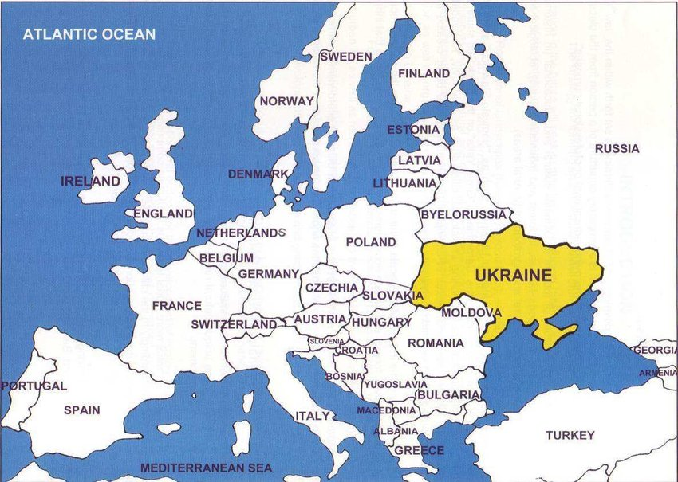
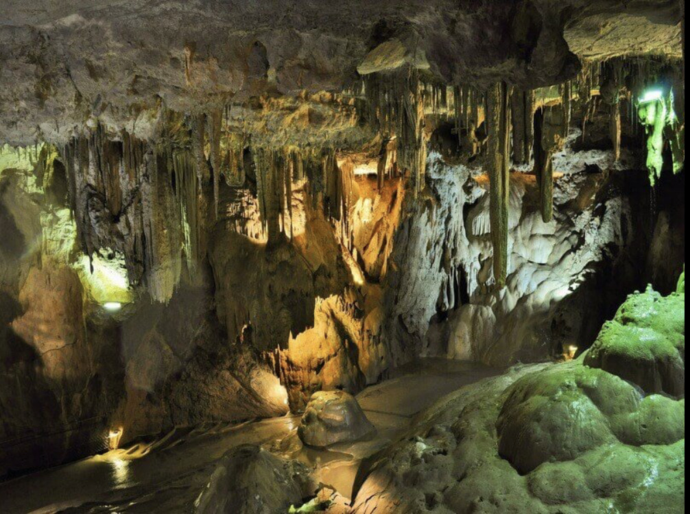
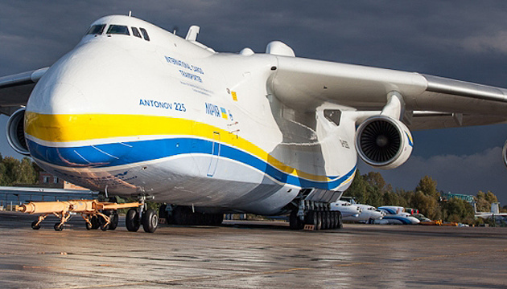
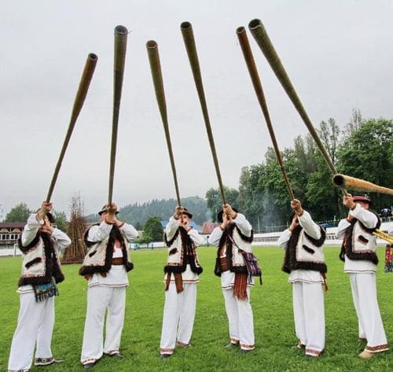
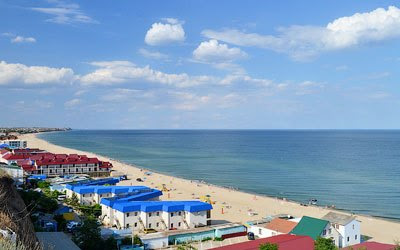
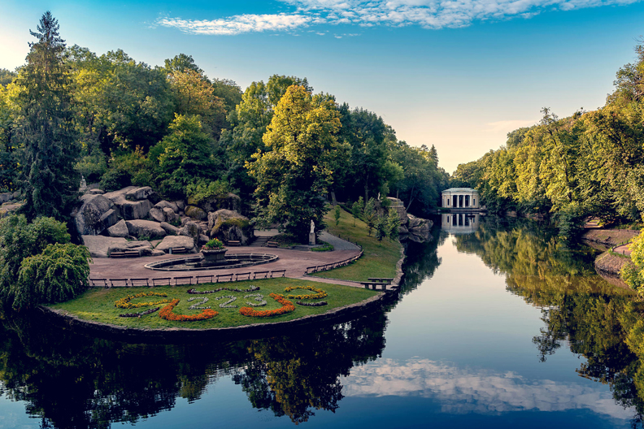
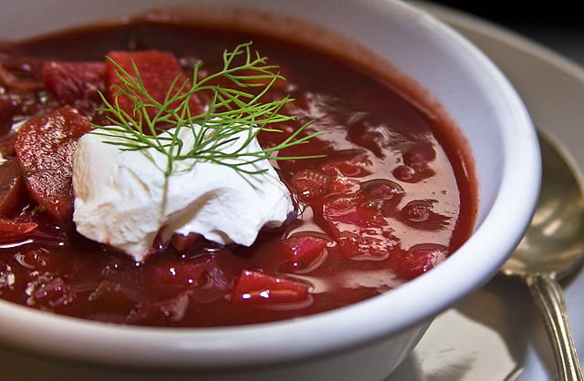

Цікаві факти про Україну

Україна – це не просто країна, це історія, традиції, унікальна природа та культурна спадщина, яка дивує навіть самих українців. Ми часто не помічаємо, скільки цікавих і маловідомих фактів приховує наша Батьківщина. Ви знали, що саме тут розташована найдовша печера Європи? Або що українці володіють однією з наймилозвучніших мов у світі?
Ця стаття розкриє 10 цікавих фактів про Україну, які здивують вас і, можливо, надихнуть поглянути на нашу країну по-новому.
Найбільша країна Європи
Україна– найбільша країна Європи за площею (603 548 км²). Вона більша за Францію, Німеччину або Іспанію. Крім того, на території України розташована найдовша річка країни – Дніпро, який перетинає державу майже повністю, забезпечуючи її водними ресурсами та неймовірними краєвидами. Цей географічний факт про Україну робить її унікальною серед інших європейських країн.
Друга найглибша станція метро у світі
Станція “Арсенальна” у Києві – друга по глибині у світі (105,5 метрів). Станція метро “Хуньянцунь” в Чунціні, Китай, побила рекорд київської “Арсенальної” та вважається найглибшою у світі (116 метрів). Спуск до платформи на станції Арсенальна займає приблизно п’ять хвилин, що є рекордним показником. Цікаво, що ця станція була побудована ще у 1960 році й досі є однією з найважливіших транспортних артерій столиці. Це ще один факт про Україну, який вражає світ.
Найдовша печера Європи
Оптимістична печера у Тернопільській області має понад 260 км досліджених ходів. Це найдовша печера не лише в Україні, а й у всій Європі! Вона досі активно досліджується спелеологами, і можливо, її довжина буде збільшена. Це природне чудо є одним із найцікавіших природних багатств України.
Мрія” – найбільший літак у світі
Легендарний Ан-225 “Мрія” був найбільшим транспортним літаком у світі. Він міг перевозити до 250 тонн вантажу! На жаль, цей унікальний літак був знищений у 2022 році російськими загарбниками, але його спадщина живе в історії українського авіабудування. Цей цікавий факт про Україну демонструє її значний внесок у світову авіацію.
Українська мова – одна з наймилозвучніших
Українська мова офіційно визнана однією з наймилозвучніших у світі. Вона посідає друге місце після італійської завдяки багатству синонімів, мелодиці та особливому ритму. Це ще один унікальний факт про Україну, який варто знати кожному.
Трембіта – найдовший музичний інструмент
Трембіта – традиційний карпатський музичний інструмент, довжина якого може сягати 4 метрів! Її використовували пастухи, щоб сповіщати про прихід ворогів або початок святкувань. Це один із найцікавіших культурних символів України, який і досі використовується у Карпатах.
Унікальна “мертва зона” в Чорному морі
Чорне море має унікальну особливість: на глибині понад 150 метрів у ньому немає кисню, тому там не виживають жодні живі організми. Це природне явище робить його одним із найбільш незвичайних морів у світі та важливим об’єктом досліджень.
“Софіївка” – ботанічне диво
Уманський парк “Софіївка” вважається одним із найкрасивіших у Європі. Його заклав польський магнат Станіслав Потоцький як подарунок для своєї дружини Софії. Це місце входить до списку найцікавіших історичних пам’яток України.
Борщ – культурна спадщина ЮНЕСКО
Український борщ визнаний ЮНЕСКО нематеріальною культурною спадщиною людства. Це не просто страва, а ціла культура, яка передається з покоління в покоління. Традиційні рецепти борщу відрізняються в кожному регіоні, що робить його ще більш унікальним гастрономічним символом України.
Висновок
Україна – країна унікальних природних чудес, величної історії та дивовижної культури. Кожен факт із цього списку – лише маленька частина багатого світу, який варто досліджувати.